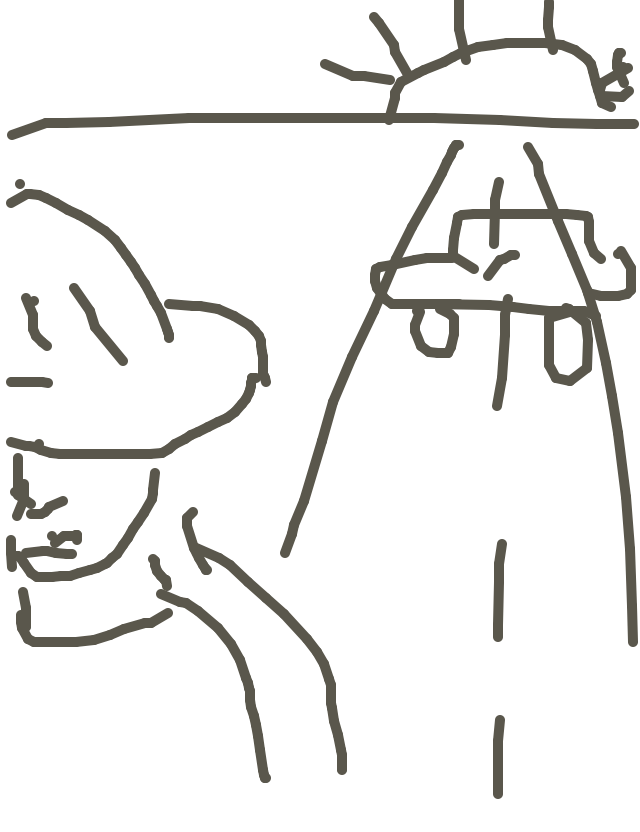
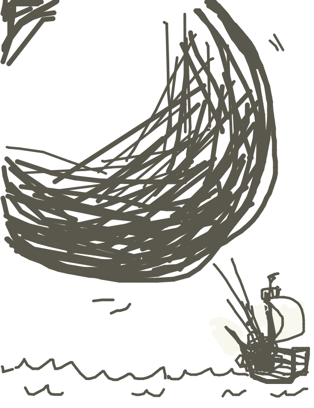

so dubbin drew...

so caseyg wrote...
The road is long and empty. It stretches off into the distance, seeming to meet the beaming sun. A man in a straw hat shakes his fist at a lone car doing a u-turn. Who could read such a deceptively simple face? Is he angry? Hard to say for sure.
so alexander drew...
so irondavy wrote...
"Walk away, just walk away," he told himself. The drive to the sun would just take way too long.
so joeb drew...
so matt wrote...
A cannonball so epic, it cannot be contained by the edges of your tiny iPhone.
so jackcheng drew...
so tag wrote...
The sun is upon us, mateys! Fire at will! Sink her into Davy's Jones's locker!